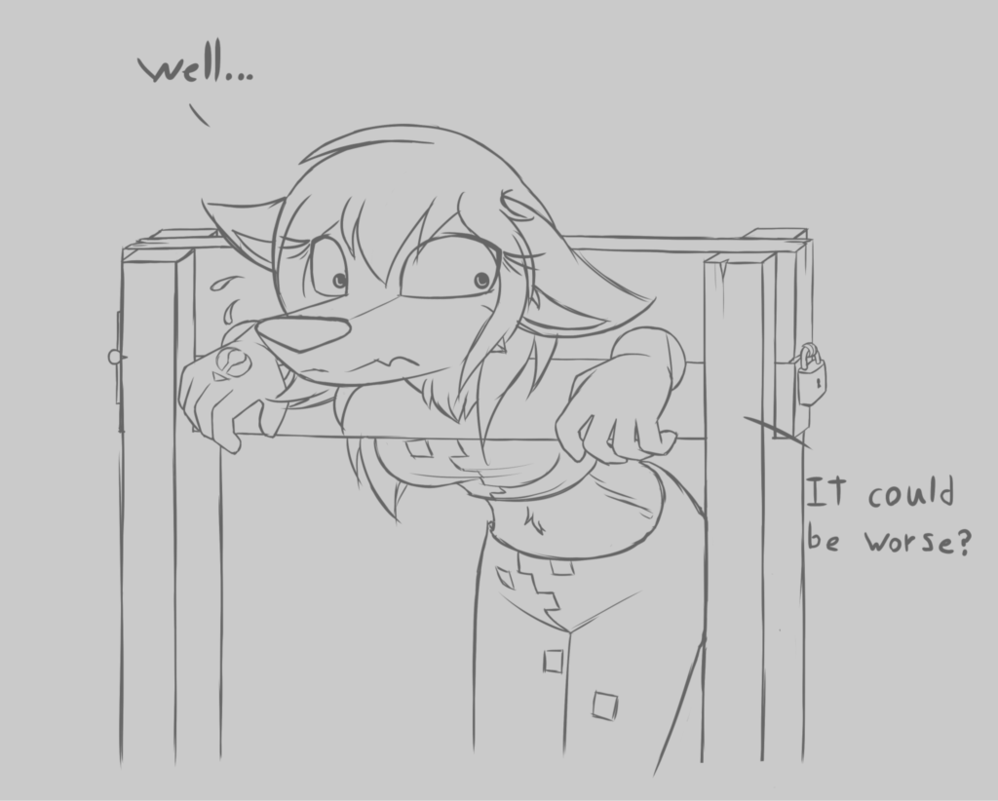

Porn Hoarding
I’m not going to lie, I am addicted. Or rather, I was, or maybe I still am. The point is, is that I am a data hoarder. I love to look at hard drives, see 100 TB of space, distributed pools, raid pools; I love it all. What comes with that, is the need to gather and store every source of media I can find. I love browsing through my collection, looking at the variety of movies I can potentially watch; even though I haven’t watched a single one, or plan to watch in the near future. Especially with software like Plex, I can show off my collection to my friends and family. Watch their jaws drop as I have literally created my own version of Netflix. With automation tools such as Couchpotato and Sonarr, one can argue that it is even better than Netflix. Did I mention I also handle requests in app also? Yea you could say its flippen amazing.
 Thats right Netflix, I totally am robbing you of like 10 customers, okay maybe 3, but whatever.
Thats right Netflix, I totally am robbing you of like 10 customers, okay maybe 3, but whatever.
Back to me collecting. The thing is, I love collecting media and filling disks. Problem: Movies are not produced fast enough. TV Shows are pretty good, you can get like an episode regularly, but what about during the off season? So TV Shows aren’t even produced at a fast enough rate to satisfy my hoarding cravings. But you know what I found out? Porn is! Porn is a multi-billion dollar industry with tons of media being released on a daily basis. To be honest, I’m not even a big fan of watching porn, but I do love collecting it. Its definitely the most daunting task out there, tons of content, no clear naming convention, and your collection is never enough.
 Literally my face when I saw the challenge ahead of me
Literally my face when I saw the challenge ahead of me
I wouldn’t necessarily say I got addicted porn, but rather addicted to collecting porn. I had custom scripts that would sort the porn once I had it selected. I even created a custom Plex scraper to properly scrape the scene information from the pay site. It was awesome. I had basically created a bunch of pipelined scripts to organize Porn very well and had a built in tagging system that automatically scrubbed through the video and tagged known sexual positions/acts for searching through later when I wanted to. It was great, I was a hit on some porn forums. Some user would ask for a video with say the Amazon Position, and just by typing in “Amazon Position” in my Plex search bar, I would have a full list of every porn video I had that exhibited at some point the Amazon Position. I was like the Google for porn. Netflix couldn’t touch this!
 and there we have Sinn sage doing her ‘cowgirl trib’
and there we have Sinn sage doing her ‘cowgirl trib’
Once in a while, I would get bored, watch a video, finish, and then delete the whole collection. While it was great to collect, and sometimes watch, I would always feel disgusted with myself afterwards ands delete the whole library. I would then be like “shitz”, and have to rebuild the library from scratch. I never had a backup solution for my pr0n, because unlike my other media, I thought to myself I would never delete this. See collecting porn had its downsides,
- You couldn’t brag about it to any of your friends/family (don’t even bother mentioning it to the better half).
- You were always paranoid when someone was on your computer alone, just incase they accidentally discovered your collection.
- Collecting had to be done behind closed doors, can’t have anyone walk in and see you ripping the whole “Everythingbutt.com” website. “Tushy.com” got kinda awkward once when a friend walked in. Oh and then there was the time I was ripping “Girlsway.com” and my girlfriend walked in and was like “wtf”.
- Porn costs money. Most of it I got from a private tracker (empornium), but the rare stuff you had to buy. And I’m a die hard collector, so of course I purchased.
 spent another $500 on some random Clip4Sale vids….
spent another $500 on some random Clip4Sale vids….
Some may argue watching porn is natural. However, after hoarding it and collecting it, I would say otherwise (with one given exception I will mention later). I had noticed many problems with myself after watching porn. Reduced sexual libido, always thinking about porn (which is shit during an exam), using it as a way to escape “this world”. And tired, always tired…..
Once I couldn’t respond to my girlfriend. At that point, I was like “shit”, this needs to change. Not to mention the ‘grip of death’ syndrome. There is a lot of problems that happen when you watch porn. Remember, you now begin to become conditioned to being attracted to actors fucking each other, rather than the idea of making love to your SO. Yes, its true, there are plenty of recent studies that indicate watching porn in small quantities is beneficial (no really, its true, do a quick Google in incognito mode). BRO, I’m sure it is, but I don’t know any normal person that watches porn for 15 minutes per week. Its like saying alcohol is good, but only if you drink 1⁄4 ounce per week.
I do feel that masturbation is healthy, because we all have sexual frustrations and all, but porn I think is something we can do without. Watching porn with your SO is different than watching porn alone. When you watch porn alone, you aren’t using your head to think of erotic fantasies to get you hard. Thats what the screen is for. See masturbation by itself is pretty dope because you can make any shit happen. Heck, I often fantasize about this girl from high school named “Rami” growing a dick and fucking this other girl from high school with her ass stuck in pillory as she yells “Rami harder!!”. Porn just bounds your imagination.
Don’t tell me this fantasy isn’t hot to think about
I must say, from what I was told by some of my female friends, they loved watching softcore porn with their boyfriends because it heightened the mood and made the sex afterwards all the better. So maybe its just mainstream porn thats the problem. At the end of the day, its all plastic. The people, the girls, the guys, the toys, the whole damn industry. And thankfully, I was able to find it within me to quit collecting, and quit watching.
It is a struggle. Sometimes I get really close to logging into said private tracker and downloading “Removed scenes from Brazzers.com”. Yea look into that, Brazzers does have a bunch of scenes that they have permanently removed. I think my favourite one of the removed scenes was HotAndMean’s “A Little Southern Hospitality” with Ashli Orion and Tory Lane (great strap on scene, Ashli gets STUFFED).
I had no fun finding this image, I swear
So far its been about a month, going strong. Lets see if I can get rid of this addiction. I do masturbate, thats why I got a fleshlight; but to the image of my girlfriend, someone real, not some fake plastic women and a bunch of stunt cocks. Masturbate only to thought of making love to my girlfriend
or the shemale high school girl/girl fantasy….